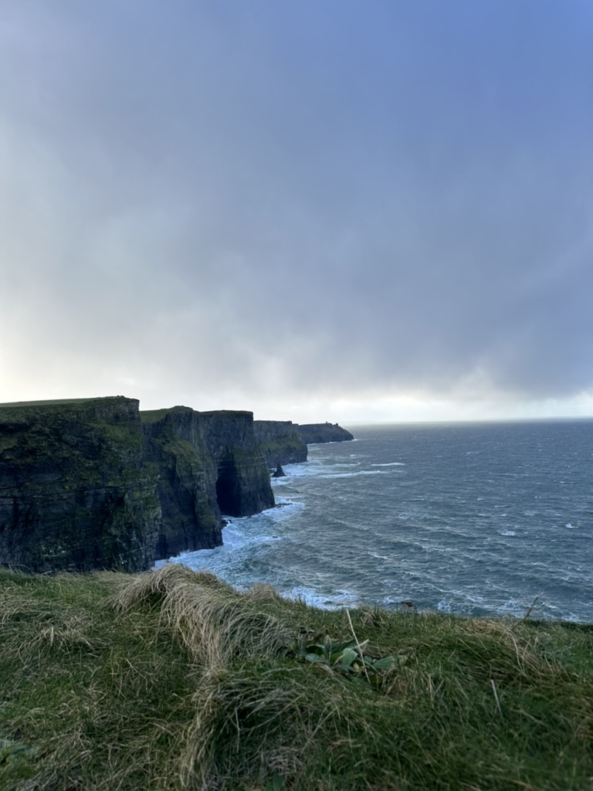
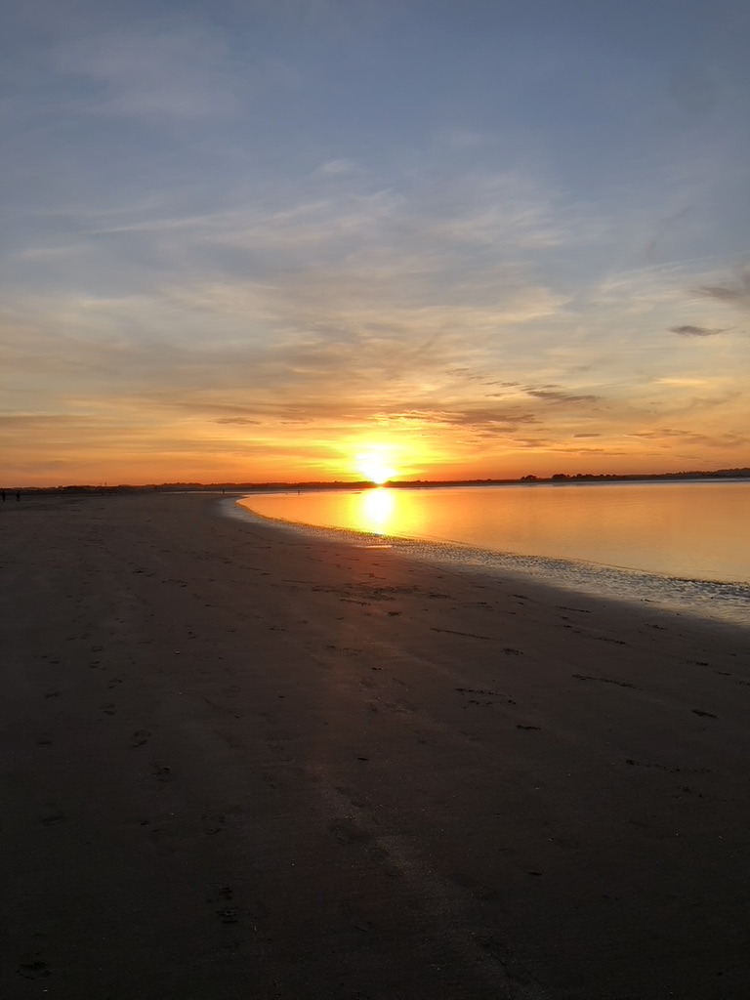
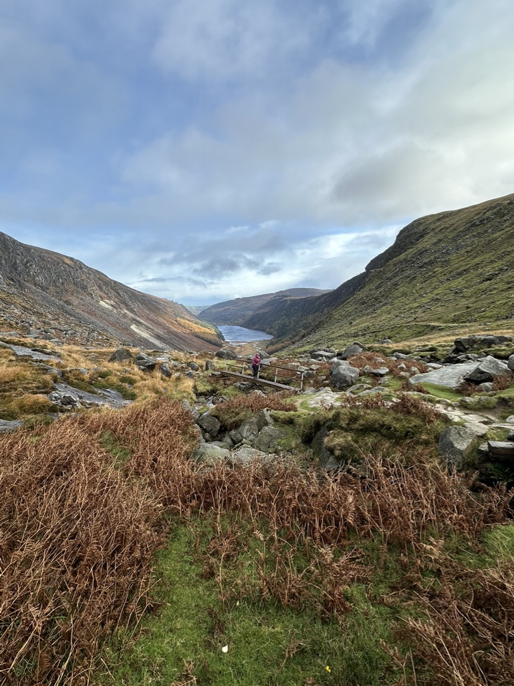
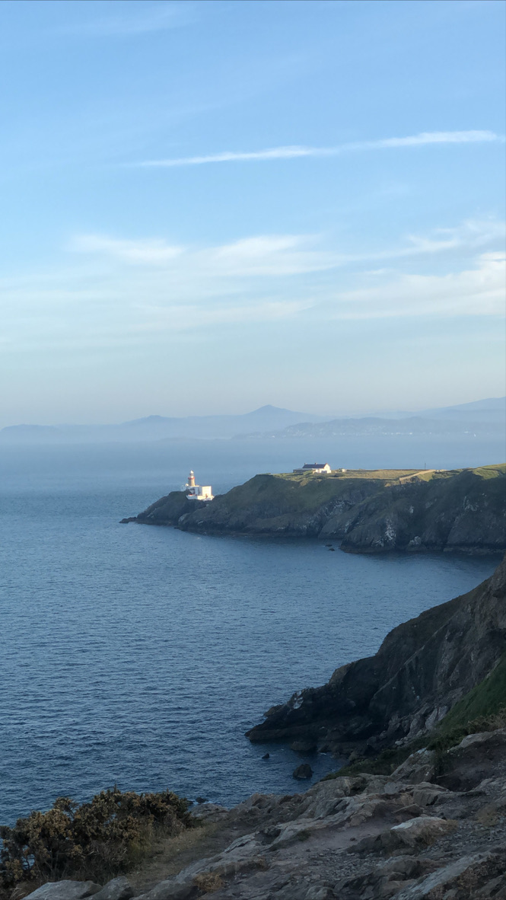
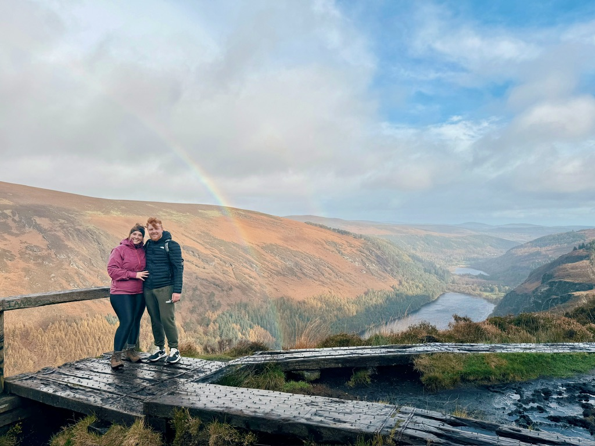

Who is Felipe?
Hey, I’m Felipe, and this is my story
From growing up in Brazil with a dream of traveling the world, to building a life here in Ireland.
Since I was a kid, I’ve always been fascinated by the idea of living somewhere else. I used to hear people talk about traveling abroad, different cultures, and new experiences, and I would just sit there imagining what it would be like if that was my life too. I didn’t fully understand it at the time, but that curiosity about the world outside my own reality was always there.

As I got older, that curiosity slowly turned into something more serious. Around my early twenties, while studying International Trade in Brazil, I started thinking that this dream could actually become real. I was already working on improving my English, and I began researching ways to live abroad. I looked into different countries and possibilities, especially exchange programs and language courses. At that time, I was between Australia and Ireland, but Ireland started to stand out more and more. Being in Europe, having the possibility to work and study, and being close to so many different countries and cultures made a lot of sense for the life I wanted to build.

In August 2019, I finally made the decision and moved to Ireland for the first time to study English. That was a huge step for me. I left behind a stable job in Brazil where I had worked for nine years — I started there when I was just 15. Walking away from that wasn’t easy at all. It meant giving up stability, comfort, and everything familiar, including my family and friends. But at the same time, I felt I needed to do it. I wanted growth, new experiences, and a completely different perspective on life.
When I arrived in Ireland, everything changed. I had to start from zero. I worked different jobs over the years — starting as a kitchen porter, then working in pubs as a barback, later becoming a security guard in places like shops, restaurants, pubs, and nightclubs, and eventually working as a delivery driver after getting my motorcycle license. It wasn’t always easy, but every step taught me something important about independence, resilience, and adapting to a new country.
Life abroad, of course, is not just about work and progress. There were also very difficult moments. In 2023, I had a serious accident in Ireland that required surgery and a long recovery. I spent time in the hospital, went through multiple procedures, and it became one of the most challenging periods of my life. Being far from family during something like that makes everything heavier, both physically and emotionally.

Around the same time, something very meaningful also happened — I met my fiancée in Ireland in 2023. Our connection was natural, and things developed quickly. We started talking, then dating, and before we realized it, we were living together. That relationship became a very important part of my journey, especially during such a difficult period.

After everything that happened in 2023, we made the decision to return to Brazil in early 2024. At that moment, we thought it would be the right choice — to be closer to family, take a break, and try to reset our lives. We lived in São Paulo and later moved to Florianópolis, trying to find a better balance between lifestyle and work. But reality was different from what we expected. The cost of living was high, salaries were not enough, and it became difficult to build the kind of life we wanted.
After some time, we started realizing that we may have rushed our decision to leave Ireland. Slowly, we began to feel that the life we wanted was still here. So we started planning our return. In the middle of this process, I came back to Ireland temporarily in November to handle legal matters related to my accident, and I also received compensation that helped us financially prepare for this new chapter. That moment ended up being very important, because it gave us the stability we needed to return properly and rebuild our life.
Now, we are back in Ireland starting over again, but this time with more experience and clarity. My fiancée has a European passport, which allows me to live here under a partner visa, giving us more stability and freedom to plan our future together. We are currently living in a place we truly love, surrounded by nature, cliffs, and the sea, while still being close to cities and opportunities.

Ireland has always been a special part of our story. It’s not a perfect country, and like everywhere else, it has its challenges. But for us, it has been a place of growth, learning, and transformation. This blog is where I want to share that journey — the real experience of building a life abroad, with all its ups and downs.